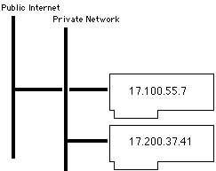

|
|
This technote describes some of the
intricacies of dealing with TCP/IP in a dynamic
environment, such as that provided
by Mac OS.
Specifically, it describes how to write
BSD sockets and Open
Transport code which correctly handles
multi-homing (multiple IP addresses), dial-up
links, sleep and wakeup on a
PowerBook (or modern desktop), modem
disconnection, and user reconfiguration.
This note is directed at all
developers who are directly using
the networking APIs provided
by Mac OS X and traditional Mac OS.
[Aug 28 2002]
|
Dynamic TCP/IP Fundamentals
Many TCP/IP programs make false assumptions about the
TCP/IP environment. While assumptions like "this machine has
TCP/IP, therefore it must have an IP address" and "the
machine's IP address won't change" were valid for
workstations on a university Ethernet, they do not hold for
a PowerBook running Mac OS connected via PPP. Specifically,
the following are non-obvious consequences of Mac OS's
dynamic TCP/IP environment.
- The computer does not have an IP address until it has
acquired one. For example, if the computer is configured
to obtain an address via PPP, it
does not obtain the address until the modem
connects.
- The computer's IP address can change over time. For
example, if the computer's DHCP lease expires, the TCP/IP
stack will negotiate for a new address, which may not be
the same as the old address.
- To be compatible with multi-homing (a computer with
multiple IP addresses) your application must not assume
that the machine has just a single IP address, or that
all of the machine's IP addresses are equivalent.
- The user can configure dial-up links (such as
Mac OS X PPP, ARA, and
others) to "Connect automatically when starting
TCP/IP applications". If your application
uses TCP/IP services without
an explicit user request, the user may be startled to
find their modem dialing in the middle of the night.
- On traditional Mac OS the
TCP/IP stack can unload from memory. When this happens,
any TCP/IP providers will be automatically
closed.
This technote describes the
techniques you must adopt to cope with these consequences.
Its primary focus is Mac OS X, although it does cover
traditional Mac OS issues as well. The technote covers the
solutions to a number of multi-homing
gotchas, the various
techniques for determining the local
IP address list, how to
avoid
dialing the modem
unexpectedly, how to handle changes
is the local IP address
list, and how to talk to
yourself using the loopback
IP address.
|
IMPORTANT:
This technote only discusses
the following networking APIs.
- the BSD sockets API on
Mac OS X
- the Open Transport
compatibility library on Mac OS X
- the Open Transport API
on traditional Mac OS (including inside
Classic)
It does not discuss older
TCP/IP APIs or their implementations, such as the
MacTCP or Open Transport's MacTCP compatibility.
The MacTCP programming interface is insufficient to
handle all of the cases described in this
note.
This technote also does
not cover high-level APIs layered on top of these
core networking APIs. For information on how to
handle dynamic TCP/IP issues when using high-level
networking API, such as URL Access and CFNetwork,
see the documentation for the specific high-level
API you're using.
|
Terminology
Mac OS supports a number of
networking APIs, and many of those APIs have multiple
implementations. Before we can talk specifics, we have to
define exactly what we mean by each term.
- traditional Mac
OS
- All versions of Mac OS prior to
Mac OS X. When used without qualification this also
includes Classic.
- Mac OS X
- Mac OS X 10.0 and
later.
- Classic
- Traditional Mac OS running
inside the Classic compatibility environment on Mac OS
X.
- Mac OS
- All versions of Mac OS,
including both traditional Mac OS and Mac OS
X.
- MacTCP API
- A very old TCP/IP programming
interface supported by MacTCP and Open
Transport.
- Open Transport
API
- The XTI-based TCP/IP
programming interface introduced with Open Transport.
This API is also supported on Mac OS X, both within the
Classic compatibility environment and by a Carbon-based
compatibility library.
- BSD sockets
- The native network programming
interface on Mac OS X. This
is the standard networking API for UNIX. You should take
advantage of the numerous non-Apple documents covering
BSD sockets, some of which are referenced
below.
- MacTCP
- The implementation of the
MacTCP API on traditional Mac OS prior to the
introduction of Open Transport.
- Open
Transport
- A network environment for
traditional Mac OS, including the Classic compatibility
environment on Mac OS X. Open Transport was first
introduced as part of System 7.5.2 on the Power Mac 9500.
Open Transport can be installed on systems as old as
System 7.1. Open Transport was first included as part of
the standard install in System 7.5.3. Open Transport was
the default networking stack for Mac OS 7.6 and all
subsequent versions of traditional Mac OS.
- MacTCP
compatibility
- Open Transport provides MacTCP
API compatibility for applications that use the MacTCP
API.
- BSD
networking
- The core network environment
for Mac OS X.
- Open Transport compatibility
library
- Mac OS X includes a library
that provides Open Transport API compatibility for
Carbon-based applications.
Common Code
Many of the code samples in this
technote rely on the common routines shown in Listing
1.
|
Listing 1. Common utility routines.
|
// Error Handling
// --------------
// SCF returns errors in two ways:
//
// o The function result is usually set to something
// generic (like NULL or false) to indicate an error.
//
// o There is a call, SCError, that returns the error
// code for the most recent function. These error codes
// are not in the OSStatus domain.
//
// We deal with this using two functions, MoreSCError
// and MoreSCErrorBoolean. Both of these take a generic
// failure indicator (a pointer or a Boolean) and, if
// that indicates an error, they call SCError to get the
// real error code. They also act as a bottleneck for
// mapping SC errors into the OSStatus domain, although
// I don't do that in this simple implementation.
//
// Note that I could have eliminated the failure indicator
// parameter and just called SCError but I'm worried
// about SCF returning an error indicator without setting
// the SCError. There's no justification for this worry
// other than general paranoia (I know of no examples where
// this happens),
static OSStatus MoreSCErrorBoolean(Boolean success)
{
OSStatus err;
int scErr;
err = noErr;
if ( ! success ) {
scErr = SCError();
if (scErr == kSCStatusOK) {
scErr = kSCStatusFailed;
}
// Return an SCF error directly as an OSStatus.
// That's a little cheesy. In a real program
// you might want to do some mapping from SCF
// errors to a range within the OSStatus range.
err = scErr;
}
return err;
}
static OSStatus MoreSCError(const void *value)
{
return MoreSCErrorBoolean(value != NULL);
}
static OSStatus CFQError(CFTypeRef cf)
// Maps Core Foundation error indications (such as they
// are) to the OSStatus domain.
{
OSStatus err;
err = noErr;
if (cf == NULL) {
err = coreFoundationUnknownErr;
}
return err;
}
static void CFQRelease(CFTypeRef cf)
// A version of CFRelease that's tolerant of NULL.
{
if (cf != NULL) {
CFRelease(cf);
}
}
|
Back to top
Two Multi-homing
Gotchas
Multi-homing is the term
used to describe a computer with more than one IP address.
This section describes how to deal with two common gotchas
on multi-homed machines. These techniques are relevant on
both traditional Mac OS and Mac OS X.
|
IMPORTANT:
If you're program only runs on traditional Mac OS,
you might be tempted to think that multi-homing is
not an issue. However, this is not true.
Traditional Mac OS supports multi-homing in various
corner cases.
- In Open Transport 1.3
and later the user can configure more than one
IP address on the same physical interface (this
is known as single
link
multi-homing).
- You can enable
multi-link multi-homing using third-party
software.
- When a computer
running Apple Remote Access server receives an
incoming IPCP (TCP/IP over PPP) connection, the
computer profits a second IP
address.
Most importantly, however,
is that all versions of Mac OS X support
multi-homing. If you follow the guidelines in this
section then your code will work properly on both
systems.
|
Multi-homing and Bind
In order to be compatible with
multi-homing, your software should, in general, bind to the
wildcard IP address (INADDR_ANY for BSD sockets
code, kOTAnyInetAddress for Open Transport
code), not to a specific IP address. For outgoing
connections this is very simple: for BSD sockets code you
should just call connect without calling
bind beforehand, and for Open Transport code
you should bind your endpoint using the code shown in
Listing 2.
|
Listing 2. Binding an endpoint for outgoing connections.
|
static OSStatus DoOutgoingBind(EndpointRef ep)
{
OSStatus err;
err = OTBind(ep, NULL, NULL);
return err;
}
|
|
IMPORTANT:
If you get the machine's primary IP address and
specifically bind to that address, you are
- writing too much code,
- creating software that won't work on a
multi-homed machine that is connected to
discontiguous internets, and
- making it harder to update your software for
IPv6.
Listing 3 shows how not to bind an endpoint for
an outgoing connection.
|
|
Listing 3. How not to bind an endpoint for outgoing connections.
|
// ***** DO NOT DO THIS *****
static OSStatus DoOutgoingBindWrongly(EndpointRef ep)
{
OSStatus err;
InetInterfaceInfo info;
InetAddress primaryAddr;
TBind bindReq;
err = OTInetGetInterfaceInfo(&info, kDefaultInetInterface);
if (err == noErr) {
OTInitInetAddress(&primaryAddr, 0, info.fAddress);
OTMemzero(&bindReq, sizeof(bindReq));
bindReq.addr.buf = (UInt8 *) &primaryAddr;
bindReq.addr.len = sizeof(primaryAddr);
err = OTBind(ep, &bindReq, NULL);
}
return err;
}
// ***** DO NOT DO THIS *****
|
For software that accepts incoming connections, the
situation is very similar: in most cases you should bind to
the wildcard IP address
(INADDR_ANY or kOTAnyInetAddress).
Code to do this for both BSD sockets and the Open Transport
API is shown in Listing 4.
|
Listing 4. Binding for incoming connections.
|
static int DoIncomingBindBSDSockets(int sock, u_short port)
{
int err;
struct sockaddr_in req;
memset(&req, 0, sizeof(req));
req.sin_family = AF_INET;
req.sin_addr.s_addr = htonl(INADDR_ANY);
req.sin_port = htons(port);
err = bind(sock, (struct sockaddr *) &req, sizeof(req));
if (err == -1) {
err = errno;
}
return err;
}
static OSStatus DoIncomingBindOT(EndpointRef ep, InetPort port)
{
OSStatus err;
TBind req;
TBind ret;
InetAddress reqAddr;
InetAddress retAddr;
OTInitInetAddress(&reqAddr, port, kOTAnyInetAddress);
OTMemzero(&req, sizeof(req));
req.addr.buf = (UInt8 *) &reqAddr;
req.addr.len = sizeof(reqAddr);
req.qlen = 10;
OTMemzero(&ret, sizeof(ret));
ret.addr.buf = (UInt8 *) &retAddr;
ret.addr.maxlen = sizeof(retAddr);
err = OTBind(ep, &req, &ret);
if (err == noErr) {
if (retAddr.fPort != reqAddr.fPort) {
(void) OTUnbind(ep);
err = kOTAddressBusyErr;
}
}
return err;
}
|
In some circumstances it is useful for server software to
bind to a specific IP address. For example, a web server
might do this so it can return different web pages depending
on the address to which the client connected. The DTS sample
code OTSimpleServerHTTP
illustrates this technique. However, unless you need to
respond differently on different IP addresses, the correct
thing to do is to bind your server to the wildcard IP
address.
|
Note:
If you're writing a server that responds
differently depending on which IP address the
client connects to, you should read the section
Server
Etiquette.
|
Multi-homing and
FTP
On a multi-link multi-homed computer, it's possible for
the "correct" local IP address of the computer to depend on
the IP address of the host you're communicating with.
For example, consider a computer with two Ethernet cards,
one connected to the public Internet and one connected to a
private network. Each card has an IP address but the machine
does not forward IP packets between the cards. This
situation is illustrated Figure 1.
|

Figure 1. An example multi-homed
configuration.
|
Now consider an FTP client running on this computer. One
of the (mis)features of the FTP protocol is that, when it
opens a data connection, the FTP client must open a port on
the local machine and send (through the control connection)
the port number and the local IP address to the server in a
PORT command. However, machines on the public Internet can
only communicate with 17.100.55.7, and machines on the
private network can only communicate with 17.200.37.41. So
how does the FTP client work out which IP address to
send?
The answer is that each networking
API has a function that returns the source local IP address
for a connection. For BSD sockets this is
getsockname and for the Open Transport API it
is OTGetProtAddress. So the FTP client
can call one of these functions on the control connection to
determine the correct local address to use for the data
connection.
The code in Listing 5 shows how to
get the local address for a connection using both BSD
sockets and the Open Transport API.
|
Listing 5. Getting the local IP
address for a connection.
|
static int GetLocalIPAddressForConnectionBSDSockets(int sock,
struct in_addr *localAddr)
{
int err;
int len;
struct sockaddr_in local;
len = sizeof(local);
err = getsockname(sock, (struct sockaddr *) &local, &len);
if (err == -1) {
err = errno;
}
if (err == 0) {
assert(len == sizeof(local));
*localAddr = local.sin_addr;
}
return err;
}
static OSStatus GetLocalIPAddressForConnectionOT(EndpointRef ep,
InetAddress *localAddr)
{
OSStatus err;
TBind localBind;
// only works if endpoint connected
assert(OTGetEndpointState(ep) == T_DATAXFER);
assert(OTIsBlocking(ep));
OTMemzero(&localBind, sizeof(TBind));
localBind.addr.buf = (UInt8 *) localAddr;
localBind.addr.maxlen = sizeof(InetAddress);
err = OTGetProtAddress(ep, &localBind, NULL);
return err;
}
|
|
Note:
GetLocalIPAddressForConnectionOT
asserts that the endpoint is in the
T_DATAXFER state because, if the
endpoint is not connected,
OTGetProtAddress will simply return
the address to which the endpoint was bound, which
is generally not at all helpful.
You can include the same test
in the BSD sockets code by calling
getpeername, although that would
complicate the code somewhat.
|
|
IMPORTANT:
Due to limitations in the Open Transport
architecture on traditional
Mac OS, the IP address returned by the above
may not be in the local IP
address list generated by the code in the
next
section.
|
Back to top
Calling All IPs
This section describes how you can
get a list of all of the IP addresses on the machine and be
notified when that list changes.
|
IMPORTANT:
In most circumstances your code should be
independent of the local IP address of the machine.
Techniques for achieving this are described in the
previous section. Getting the
local IP address list
is typically useful only in the following
circumstances.
- You're writing a server that responds
differently depending on which IP address the
client connects to.
- You're displaying a list of IP addresses to
the user.
If you're using this code for any other reason
you should carefully consider the multi-homing
compatibility issues before proceeding.
If you're writing a server
that responds differently depending on which IP
address the client connects to, you should also
read the section Server
Etiquette.
|
Getting a List of All IP Addresses
There are at least three different
methods for getting a list of all of the machine's IP
addresses (the local IP address list).
- System Configuration
framework
- Open Transport API
- BSD sockets
The following sections describe
each of these methods in turn. The choice of which method to
use depends on the system requirements and existing
structure of your code.
- If you need a method that works
on traditional Mac OS, you should use the Open Transport
API. You can then choose to use the same code on Mac OS
X, or write new code for Mac OS X that uses System
Configuration framework.
- If you want to share source
code with other UNIX platforms, the BSD sockets approach
is probably best.
- If you're writing code solely
for Mac OS X and you need to be notified when the list of
IP local addresses changes, System Configuration
framework is the best approach.
- All other things being equal,
Apple recommends the System Configuration framework (SCF)
approach over the BSD sockets approach because
- SCF provides a way to notify
you when the list changes, and
- SCF isolates you from
changes in the underlying network kernel.
System
Configuration Framework
Mac OS X 10.1 introduced a public
API, the System Configuration framework, for accessing
network setup and state information. SCF is the recommended
way for you to get the local IP address list under Mac OS X.
Listing 6 shows how you can do this.
|
Listing 6. Getting
the local IP address list using System
Configuration framework.
|
static void GetIPAddressListFromValue(const void *key,
const void *value,
void *context)
// This function is a callback CopyIPAddressListSCF when
// it calls CFDictionaryApplyFunction. It extracts the
// IPv4 address list from the network service dictionary
// and appends it to the result dictionary (which is passed
// in via the context pointers).
{
CFArrayRef intfAddrList;
assert( key != NULL );
assert( CFGetTypeID(key) == CFStringGetTypeID() );
assert( value != NULL );
assert( CFGetTypeID(value) == CFDictionaryGetTypeID() );
assert( context != NULL );
assert( CFGetTypeID(context) == CFArrayGetTypeID() );
intfAddrList = CFDictionaryGetValue(value,
kSCPropNetIPv4Addresses);
if (intfAddrList != NULL) {
assert( CFGetTypeID(intfAddrList)
== CFArrayGetTypeID() );
CFArrayAppendArray(context,
intfAddrList,
CFRangeMake(0, CFArrayGetCount(intfAddrList))
);
}
}
static OSStatus CopyIPAddressListSCF(CFArrayRef *addrList)
// Returns a CFArray that contains every IPv4
// address on the system (as CFStrings) in no
// particular order.
{
OSStatus err;
SCDynamicStoreRef ref;
CFStringRef pattern;
CFArrayRef patternList;
CFDictionaryRef valueDict;
CFMutableArrayRef result;
assert( addrList != NULL);
assert(*addrList == NULL);
ref = NULL;
pattern = NULL;
patternList = NULL;
valueDict = NULL;
result = NULL;
// Create a connection to the dynamic store, then create
// a search pattern that finds all IPv4 entities.
// The pattern is "State:/Network/Service/[^/]+/IPv4".
ref = SCDynamicStoreCreate( NULL,
CFSTR("CopyIPAddressListSCF"),
NULL,
NULL);
err = MoreSCError(ref);
if (err == noErr) {
pattern = SCDynamicStoreKeyCreateNetworkServiceEntity(
NULL,
kSCDynamicStoreDomainState,
kSCCompAnyRegex,
kSCEntNetIPv4);
err = MoreSCError(pattern);
}
// Now make a pattern list out of the pattern and then
// call SCDynamicStoreCopyMultiple. We use that call,
// rather than repeated calls to SCDynamicStoreCopyValue,
// because it gives us a snapshot of the state.
if (err == noErr) {
patternList = CFArrayCreate(NULL,
(const void **) &pattern,
1,
&kCFTypeArrayCallBacks);
err = CFQError(patternList);
}
if (err == noErr) {
valueDict = SCDynamicStoreCopyMultiple(ref,
NULL,
patternList);
err = MoreSCError(valueDict);
}
// For each IPv4 entity that we found, extract the list
// of IP addresses and append it to our results array.
if (err == noErr) {
result = CFArrayCreateMutable(NULL, 0,
&kCFTypeArrayCallBacks);
err = CFQError(result);
}
// Iterate over the values, extracting the IP address
// arrays and appending them to the result.
if (err == noErr) {
CFDictionaryApplyFunction(valueDict,
GetIPAddressListFromValue,
result);
}
// Clean up.
CFQRelease(ref);
CFQRelease(pattern);
CFQRelease(patternList);
if (err != noErr && result != NULL) {
CFQRelease(result);
result = NULL;
}
*addrList = result;
assert( (err == noErr) == (*addrList != NULL) );
return err;
}
|
|
Note:
At the time of writing (Mac OS X 10.2), System
Configuration framework does not maintain
information about the state of IPv6 interfaces
(r. 2944943).
|
Open Transport API
The code in Listing 7 shows how to
determine the local IP address list using Open Transport
calls. This code will work on both traditional Mac OS and
Mac OS X. If your program runs on traditional Mac OS, this
is the code to use. If your code code also runs on Mac OS X
you can continue to use this code, although Apple recommend
that you use System Configuration framework because that
provides a way to notify you when the list
changes.
|
Listing 7. Getting
the local IP address
list using Open Transport.
|
typedef InetHost **InetHostHandle;
static OSStatus AddSecondaryAddresses(
InetInterfaceInfo* interfaceInfo,
SInt32 interfaceIndex,
InetHostHandle addrList)
{
OSStatus err;
InetHost *addrBuf;
UInt32 addrCount;
addrBuf = NULL;
addrCount = interfaceInfo->fIPSecondaryCount;
// Allocate a buffer for the secondary address info.
addrBuf = (InetHost *) NewPtr(addrCount * sizeof(InetHost));
if (addrBuf == NULL) {
err = kENOMEMErr;
}
// Ask OT for the list of secondary addresses on this
// interface and add each secondary address to the list.
if (err == noErr) {
err = OTInetGetSecondaryAddresses(addrBuf,
&addrCount,
interfaceIndex);
}
if (err == noErr) {
err = PtrAndHand(addrBuf,
(Handle) addrList,
addrCount * sizeof(InetHost));
}
// Clean up.
if (addrBuf != NULL) {
DisposePtr( (Ptr) addrBuf );
}
return err;
}
enum
{
kOTIPSingleLinkMultihomingVersion = 0x01300000
};
static OSStatus GetIPAddressListOT(InetHostHandle addrList)
{
OSStatus err;
Boolean haveIPSingleLinkMultihoming;
NumVersionVariant otVersion;
SInt32 interfaceIndex;
InetInterfaceInfo info;
Boolean done;
// Must be running at system task time.
assert( TaskLevel() == 0 );
SetHandleSize( (Handle) addrList, 0 );
assert( MemError() == noErr );
haveIPSingleLinkMultihoming =
( Gestalt(gestaltOpenTptVersions, (long *) &otVersion) == noErr
&& (otVersion.whole >= kOTIPSingleLinkMultihomingVersion )
&& ( OTInetGetSecondaryAddresses
!= (void *) kUnresolvedCFragSymbolAddress));
err = noErr;
done = false;
interfaceIndex = 0;
do {
done = ( OTInetGetInterfaceInfo(&info, interfaceIndex) != noErr );
if ( ! done ) {
// If all interfaces are disabled Mac OS X
// returns a single interface with a 0
// address, so we specifically exclude that.
// Otherwise just add the IP address of this
// interface to the list.
if (info.fAddress != kOTAnyInetAddress) {
err = PtrAndHand(&info.fAddress,
(Handle) addrList,
sizeof(InetHost));
}
// Now add any secondary addresses.
if ( err == noErr
&& haveIPSingleLinkMultihoming
&& info.fIPSecondaryCount > 0 ) {
err = AddSecondaryAddresses(&info,
interfaceIndex,
addrList);
}
interfaceIndex += 1;
}
} while (err == noErr && !done);
return err;
}
|
|
IMPORTANT:
OTInetGetSecondaryAddresses is not
implemented prior to Open Transport 1.3
(Mac OS 8.1). To work
correctly with systems prior to that, you must
weak-link with the OpenTptInternetLib
and check for its existence by comparing its
address to
kUnresolvedCFragSymbolAddress. For
more information about weak-linking, you should
read DTS Technote 1083
Weak-Linking to a Code Fragment Manager-based
Shared Library.
|
BSD Sockets
Mac OS 10.2 and later support a new
call, getifaddrs, that returns a list of
network interfaces and their assigned addresses. This is the
easiest way to get the local IP address list using BSD-style
APIs. However, this only works on Mac OS X 10.2 and later.
In earlier systems you must dig a little deeper.
The BSD sockets API provides an
ioctl, SIOCGIFCONF, that returns a list of all
the interfaces on the system. You can use this ioctl to get
the local IP address list. An example of doing this is the
get_ifi_info routine on page 434 of
UNIX Network
Programming. You can even
download the source code from the book's web page. This
technique is useful on Mac OS X 10.1.x and earlier, and if
portability to other UNIX platforms is a
requirement.
When
Good IPs Go Bad
If you cache the local IP address
list (either implicitly, by opening a listener for each
local IP address, or explicitly in your code), you must
implement a mechanism to update your cache when the list
changes. The best way to do this depends on your target
platform: techniques for both Mac OS X and traditional Mac
OS are described below. If you have a Carbon application
that runs on both platforms you will probably need to use
both techniques.
Mac OS X
On Mac OS X the best way to be
notified of changes in the local IP address list is to
request notifications from System Configuration framework.
Listing 8 shows how to set this up. This function creates a
connection to the System Configuration framework dynamic
store and a corresponding run loop source. If you add (using
CFRunLoopAddSource) this run loop source to
your run loop (typically found with
CFRunLoopGetCurrent), whatever function you
supplied to
CreateIPAddressListChangeCallbackSCF will be
called when any IPv4 entities change in the System
Configuration framework dynamic store, that is, when the
local IP address list changes.
|
Listing 8. Using
System Configuration framework for IP address
change notification.
|
static OSStatus CreateIPAddressListChangeCallbackSCF(
SCDynamicStoreCallBack callback,
void *contextPtr,
SCDynamicStoreRef *storeRef,
CFRunLoopSourceRef *sourceRef)
// Create a SCF dynamic store reference and a
// corresponding CFRunLoop source. If you add the
// run loop source to your run loop then the supplied
// callback function will be called when local IP
// address list changes.
{
OSStatus err;
SCDynamicStoreContext context = {0, NULL, NULL, NULL, NULL};
SCDynamicStoreRef ref;
CFStringRef pattern;
CFArrayRef patternList;
CFRunLoopSourceRef rls;
assert(callback != NULL);
assert( storeRef != NULL);
assert(*storeRef == NULL);
assert( sourceRef != NULL);
assert(*sourceRef == NULL);
ref = NULL;
pattern = NULL;
patternList = NULL;
rls = NULL;
// Create a connection to the dynamic store, then create
// a search pattern that finds all IPv4 entities.
// The pattern is "State:/Network/Service/[^/]+/IPv4".
context.info = contextPtr;
ref = SCDynamicStoreCreate( NULL,
CFSTR("AddIPAddressListChangeCallbackSCF"),
callback,
&context);
err = MoreSCError(ref);
if (err == noErr) {
pattern = SCDynamicStoreKeyCreateNetworkServiceEntity(
NULL,
kSCDynamicStoreDomainState,
kSCCompAnyRegex,
kSCEntNetIPv4);
err = MoreSCError(pattern);
}
// Create a pattern list containing just one pattern,
// then tell SCF that we want to watch changes in keys
// that match that pattern list, then create our run loop
// source.
if (err == noErr) {
patternList = CFArrayCreate(NULL,
(const void **) &pattern, 1,
&kCFTypeArrayCallBacks);
err = CFQError(patternList);
}
if (err == noErr) {
err = MoreSCErrorBoolean(
SCDynamicStoreSetNotificationKeys(
ref,
NULL,
patternList)
);
}
if (err == noErr) {
rls = SCDynamicStoreCreateRunLoopSource(NULL, ref, 0);
err = MoreSCError(rls);
}
// Clean up.
CFQRelease(pattern);
CFQRelease(patternList);
if (err != noErr) {
CFQRelease(ref);
ref = NULL;
}
*storeRef = ref;
*sourceRef = rls;
assert( (err == noErr) == (*storeRef != NULL) );
assert( (err == noErr) == (*sourceRef != NULL) );
return err;
}
|
Traditional Mac OS
On
traditional Mac OS the best technique to watch for changes
in the local IP address list varies depending on the version
of Open Transport. Open Transport 2.5 and higher (present
since Mac
OS 9) will deliver TCP/IP
stack transition events to your application's notifier
(registered using OTRegisterAsClient). You can
install a notifier and listen for the
kOTStackWasLoaded event, after which you can
build the local IP address list as described
earlier.
Earlier versions of Open Transport
do not send these stack transition events. The only good way
to detect changes in the local IP address list is to
periodically poll the list.
Back to top
No Nuisance Calls, Please
Mac OS allows the user to configure
their computer to dial on demand via a checkbox in
the network control panel ("Connect automatically when
starting TCP/IP applications"). Your software must be
careful not to accidentally dial the modem when the user
wasn't expecting it. The best way to do this depends on the
target platform. Before we start discussing these techniques
in detail, however, we need to define some terms.
Terminology
For the sake of this discussion,
it's helpful to define two classes of network activity. A
solicited network operation is the result of a direct
user command. Solicited operations should trigger dial on
demand if necessary. For example, if the user opens a web
page in a browser, or checks for email, or starts
downloading a file, they expect the modem to dial if
necessary.
In contrast, an unsolicited
network operation is only indirectly related to a user
action, and should not trigger dial on demand. For example,
your application's automatic software update feature is
almost certainly an unsolicited operation; most users will
be annoyed if your software dials their modem just to check
for software updates.
One useful technique is to perform
unsolicited operations parasitically; when the user
connects to the network for other reasons, your software
should take advantage of the network connection and perform
any pending unsolicited operations. For example, a mail
server program could monitor the network state and choose to
check for and deliver mail once the user has established a
connection for other reasons. You can watch for changes in
network connectivity using the techniques described
earlier.
|
Note:
If your program works parasitically, you should be
careful not to use the network for a long period of
time. As long as you continue sending or receiving
traffic, you will forestall PPP's "disconnect on
idle". This might take the user by
surprise.
Consider the example of an
automatic software update program that sits in the
background, waiting for the computer to connect to
the network. When that happens, it quickly and
automatically checks for the presence of a software
update. However, it shouldn't start downloading a
multi-megabyte archive without asking the user
first, otherwise the traffic associated with this
unsolicited operation will prevent an idle
disconnect.
|
In many cases classifying an
operation as solicited or unsolicited is a judgment call. To
continue the previous example, a mail server application
could store mail locally and attempt to parasitically
deliver it. However, if the user doesn't establish a
connection within a reasonable time (say a day), the mail
server should probably connect anyway. Ultimately you need
to decide how to manage these situations on a case-by-case
basic, and then accept feedback from your users.
You may even want to provide a
user preference to control this behavior.
Finally, it's worth noting that the
techniques discussed below only work if the modem is
directly connected to the computer. If the computer's
connectivity in indirectly run through a modem (for example,
the computer is on a home AirPort network and the AirPort
Base Station connects to the Internet via its modem), there
is very little you can do to avoid nuisance
calls.
Mac OS X
Mac OS X provides specific support
for avoiding nuisance calls. System Configuration framework
exports two functions,
SCNetworkCheckReachabilityByAddress and
SCNetworkCheckReachabilityByName, which
determine whether communicating with a particular site will
trigger a modem to dial. Before doing any unsolicited
network operation you should call these functions to see if
you might annoy the user by dialing the modem. Listing 9
shows an example of how to do this.
|
Listing 9. Using
System Configuration framework to check
reachability.
|
static Boolean UnsolicitedAllowedSCF(const char *serverName)
{
Boolean result;
SCNetworkConnectionFlags flags;
// IMPORTANT:
// To work with CodeWarrior you should set the
// "enums are always int" option, which the CWPro8
// Mach-O stationery fails to do.
assert(sizeof(SCNetworkConnectionFlags) == sizeof(int));
result = false;
if ( SCNetworkCheckReachabilityByName(serverName, &flags) ) {
result = !(flags & kSCNetworkFlagsConnectionRequired)
&& (flags & kSCNetworkFlagsReachable);
}
return result;
}
|
One key difference between
traditional Mac OS and Mac OS X is that Mac OS X implements
dial on demand by monitoring traffic, whereas traditional
Mac OS dials the modem when you open a TCP/IP provider.
Therefore, on Mac OS X, you should check for network
reachability before communicating, whereas on traditional
Mac OS you have to check for network reachability before
opening a TCP/IP provider. The situation with traditional
Mac OS is explained in more detail below.
Traditional Mac OS
When running on traditional Mac OS,
your software must be careful to create a TCP/IP
provider only when it actually needs to use the network.
This is because the act of you opening a TCP/IP provider
can cause the modem to dial,
even if you don't send any network traffic.
Your application can avoid dialing the modem for
unsolicited operations by simply calling
OTInetGetInterfaceInfo before starting the
network operation. If OTInetGetInterfaceInfo
indicates that the TCP/IP stack is loaded, the modem (if
any) has already been dialed and your application can safely
use the network. Listing 10 shows how to do this.
|
Listing 10. Using
OTInetGetInterfaceInfo
to check reachability.
|
static Boolean UnsolicitedAllowedTrad(const char *serverName)
{
#pragma unused(serverName)
InetInterfaceInfo info;
return ( OTInetGetInterfaceInfo(&info,
kDefaultInetInterface) == noErr );
}
|
While the above code is very
simple, some developers have found it insufficiently
rigorous for their taste. For example, the TCP/IP stack
might be unloaded but the machine is connected via Ethernet,
so opening a TCP/IP provider is unlikely to inconvenience
the user. A more rigorous approach is shown in Listing 11.
This uses the NSHTCPWillDial (from the DTS
sample code MoreNetworkSetup)
to check for reachability. This has the advantage that it
covers more cases, at the cost of make the code
significantly more complex (once you start looking inside
the implementation of
NSHTCPWillDial).
|
Listing 11. Using
NSHTCPWillDial
to check reachability.
|
static Boolean UnsolicitedAllowedMNS(const char *serverName)
{
#pragma unused(serverName)
UInt32 willDial;
return (NSHTCPWillDial(&willDial) == noErr)
&& (willDial == kNSHTCPDialNo);
}
|
|
Note:
Because of the way the TCP/IP stack is constructed,
it is possible to be on a PPP link and for the link
to be connected without the TCP/IP stack being
loaded. In this case, NSHTCPWillDial
will report that it is not safe to open a TCP/IP
endpoint even though it is.
NSHTCPWillDial does not cover this
case for the following reasons.
- The case is relatively rare. Most users
connect the PPP link using dial on demand, which
means the TCP/IP stack is loaded when the link
connects.
- Detecting the PPP link status must be done
with link-specific code. While it would be
relatively easy to cover some common cases (ARA,
FreePPP and derivatives), there would be no end
to the list of special cases to cover, and some
of those cases are both common and tricky
(AOL).
NSHTCPWillDial produces a false
negative, which is the least inconvenient failure
for the user.
|
Back to top
Endpoint Mortality
There are a number of situations
where the TCP/IP stack is forced to invalidate some of your
connections unexpectedly. The section describes how this can
happen and how you can detect and rectify the
problem.
Endpoint
Mortality on Mac OS X
The TCP/IP stack on Mac OS X is
always loaded. This prevents a number of problems that occur
on traditional Mac OS. For example, Mac OS X always allows
TCP/IP applications to talk to other applications on the
same machine (see Talking
to Yourself) and never
closes Open Transport providers for you. However, when the
local IP address list changes, it's possible for the source
address of a connection to disappear from the list. This
creates a stale connection, one that is effectively
broken. Unfortunately, your application is not notified of
this. Specifically, you might expect a TCP connection to
break (for example, an asynchronous OT endpoint would
receive a T_DISCONNECT event), but this doesn't
happen. Instead the connection continues to exist but won't
be able to send or receive any data.
This problem is fundamental to the
TCP/IP protocol itself, and affects both BSD sockets and
Open Transport endpoints. A connection is stale if its local
address is no longer in the local IP address list. The most
commonly affected connections are:
- connected TCP sockets and
endpoints
- connected UDP
sockets
- non-connected TCP and UDP
sockets and endpoints that are bound to a specific IP
address (rather than the wildcard IP address)
Your strategy for dealing with
stale connections will depend on the nature of your
application. For client applications, where connections are
typically short-lived, you probably don't need to do
anything. If you implement a timeout mechanism the total
lack of any data transferred on the connection will
eventually trigger your timeout and you will close the
connection. Alternatively, the user may choose to manually
close the connection.
For client applications with
long-lived connections, you should implement some sort of
safeguard against stale connections. One technique for doing
this is to watch for changes to the local IP address list
(using System Configuration framework, as described
above) and, after each
change, verify that the source address of each of your
connections (which you can get using the code
shown earlier) is still in
the local IP address list. If the connection's source
address is no longer in the local IP address list, the
connection is stale and you should reestablish it (subject
to any nuisance
call considerations).
Listing 12 shows how to check for stale connections under
both BSD sockets and the Open Transport API.
|
IMPORTANT:
There are a number of ways that an interface can
temporarily go down (for example, the user strays
outside of their AirPort network, or simple changes
which port they're using on a hub), so it's
important that you implement a time delay between
when the interface disappears and when you shut
down the connection.
|
|
Listing 12.
Checking if a connection is stale.
|
static Boolean IsEndpointStale(EndpointRef ep,
InetHostHandle addrList)
{
Boolean stale;
InetAddress sourceAddr;
ItemCount index;
ItemCount count;
if ( GetLocalIPAddressForConnectionOT(ep,
&sourceAddr) != noErr ) {
stale = true;
} else {
assert(sourceAddr.fAddressType == AF_INET);
if (sourceAddr.fHost == kOTAnyInetAddress) {
stale = false;
} else {
stale = true;
count = GetHandleSize( (Handle) addrList ) / sizeof(InetHost);
for (index = 0; index < count; index++) {
if ( sourceAddr.fHost == (*addrList)[index] ) {
stale = false;
break;
}
}
}
}
return stale;
}
static Boolean IsSocketStale(int sock, CFArrayRef addrList)
{
Boolean stale;
struct in_addr sourceAddr;
CFStringRef sourceAddrStr;
sourceAddrStr = NULL;
if ( GetLocalIPAddressForConnectionBSDSockets(
sock,
&sourceAddr) != 0 ) {
stale = true;
} else {
if (sourceAddr.s_addr == INADDR_ANY) {
stale = false;
} else {
stale = true;
sourceAddrStr = CFStringCreateWithCString(
NULL,
inet_ntoa(sourceAddr),
kCFStringEncodingASCII);
if (sourceAddrStr != NULL) {
stale = ! CFArrayContainsValue(
addrList,
CFRangeMake(0, CFArrayGetCount(addrList)),
sourceAddrStr);
}
}
}
CFQRelease(sourceAddrStr);
return stale;
}
|
For server applications, you should
follow the advice in the Server
Etiquette
section.
|
IMPORTANT:
Traditional Mac OS prevents stale connections by
automatically closing all TCP/IP providers when the
local IP address list changes, as described in the
next section. Mac OS X does not currently do this,
and will never send your Open Transport notifier
the kOTProviderWillClose and
kOTProviderHasClosed messages.
However, it is possible that Mac OS X's Open
Transport compatibility library may start to do
this in the future. If you write Open Transport
code that runs on Mac OS X you should be prepared
to handle these events appropriately. It's likely
that the appropriate response is to simply ignore
the events and deal with stale connections using
the technique described above.
|
Endpoint
Mortality on Traditional Mac OS
The life cycle of the TCP/IP stack
on traditional Mac OS is much more complex. A key aspect of
Open Transport is that the TCP/IP stack can load and unload
from memory. When the stack is unloaded you can't use TCP/IP
services. If you create a TCP/IP provider, Open Transport
loads the TCP/IP stack. If the computer is configured to
dial on demand, then loading the TCP/IP stack will trigger
the modem to dial. If the modem connection fails, the TCP/IP
stack will fail to load and, if it was triggered by you
creating a provider, the provider creation function will
return an error.
Techniques for avoid dial on demand
problems are discussed in the section No
Nuisance Calls,
Please.
The TCP/IP stack can unload from
memory in a number of circumstances:
- if TCP/IP is using the modem
and the modem disconnects
- if the machine's IP address
changes (for example, DHCP could not renew a
lease)
- if the computer is put to sleep
(except as noted below)
- if the user modifies the
settings in the TCP/IP control panel
- if some application commits
changes to the network settings using Network
Setup
- older versions of Open
Transport can unload the TCP/IP stack after two minutes
if all providers are closed
|
Note:
The TCP/IP stack will only unload on deep sleep.
This happens on PowerBooks and modern desktop
machines (Power Macintosh G4 (AGP graphics) and
later, and iMac DV and later). Also, on machines
that support wake-on-LAN, the TCP/IP stack may not
unload at sleep time if wake-on-LAN is enabled (in
the Energy Saver control panel).
|
When the TCP/IP stack unloads, it
closes all TCP/IP providers. When it closes a
provider in this way, Open Transport calls the provider's
notifier with one of two events.
kOTProviderWillClose is sent when OT is
closing your provider in a controlled fashion, typically
when the user reconfigures the TCP/IP stack. It is always
sent at system task time. You may choose to put the
provider in synchronous mode and shut down the network
connection cleanly.kOTProviderHasClosed is sent when OT
"force closes" your provider. This is typically done when
the underlying link layer shuts down. It may be sent at
system task or deferred task time, so you must write your
code to assume it's running at deferred task time. The
underlying provider has already been closed but you must
call OTCloseProvider to avoid a (small)
memory leak.
Regardless of the action of your notifier, the provider
will always be closed when you return from your notifier.
Any operations on the provider after your notifier returns
will return kOTBadReferenceErr.
For TCP/IP providers on which you're actively working
(for example, worker endpoints which are actively
transferring data), you can ignore these events. The next
time you use the provider, you will get a
kOTBadReferenceErr error, which your generic
error handling should respond to by closing the provider.
However, if you open a TCP/IP provider which you're not
actively working on (such an InetSvcRef which
you use periodically for DNS lookups, or a listening
endpoint in a server), you must install a notifier which
handles these events. Listing 13 is an example of how to do
this.
|
Listing 13.
Handling provider closed events.
|
static InetSvcRef gInetServices = kOTInvalidProviderRef;
static pascal void MyInetServicesNotifier(
void* contextPtr,
OTEventCode code,
OTResult result,
void* cookie)
{
#pragma unused(contextPtr)
#pragma unused(result)
#pragma unused(cookie)
switch (code) {
case kOTSyncIdleEvent:
// [... yielding code removed ...]
break;
case kOTProviderWillClose:
case kOTProviderIsClosed:
// OT is closing the provider out from underneath us.
// We remove our reference to it so the next time
// someone calls MyStringToAddress, we'll reopen it.
(void) OTCloseProvider(gInetServices);
gInetServices = kOTInvalidProviderRef;
break;
default:
// do nothing
break;
}
}
static OSStatus MyOpenInetServices(void)
{
OSStatus err;
OSStatus junk;
gInetServices = OTOpenInternetServicesInContext(
kDefaultInternetServicesPath, 0, &err, NULL);
if (err == noErr) {
junk = OTSetBlocking(gInetServices);
assert(junk == noErr);
junk = OTSetSynchronous(gInetServices);
assert(junk == noErr);
junk = OTInstallNotifier(gInetServices,
MyInetServicesNotifier, NULL);
junk = OTUseSyncIdleEvents(gInetServices, true);
assert(junk == noErr);
}
return err;
}
static OSStatus MyStringToAddress(const char *string,
InetHost *address)
{
OSStatus err;
InetHostInfo hostInfo;
// If the DNS provider isn't currently open, open it.
err = noErr;
if (gInetServices == kOTInvalidProviderRef) {
err = MyOpenInetServices();
}
// Now do the name to address translation using the provider.
if (err == noErr) {
err = OTInetStringToAddress(gInetServices,
(char *) string, &hostInfo);
}
if (err == noErr) {
// For this example, we just return the host's first
// IP address.
*address = hostInfo.addrs[0];
}
return err;
}
|
Listing 13 illustrates two important points:
- The
gInetServices provider is not
created until the program needs to convert a name to an
address. This lazy creation prevents the program dialing
the modem prematurely.
- When the notifier is informed that the provider has
closed, it invalidates
gInetServices. The
next time MyStringToAddress is called, it
will notice this and recreate the provider.
Because Open Transport always
closes any providers before changing the local IP address
list, it's not possible to get stale connections on
traditional Mac OS.
Back to top
Server Etiquette
Handling the events described in
the previous section is especially important for servers. A
server will typically have one or more open listeners
(listening sockets for BSD sockets code, or listening
endpoints for Open Transport code), which are waiting for
connections from clients. It's important that those
listeners remain active regardless of network
reconfigurations.
Listeners on Mac OS X
If you follow the advice
given
earlier, handling listeners
on Mac OS X is very simple. The TCP/IP stack on Mac OS X
never unloads, so your listeners will never automatically
close. Moreover, because your listeners are bound to the
wildcard IP address (INADDR_ANY for BSD sockets
code, kOTAnyInetAddress for Open Transport
code), changes to the local IP address list will never
create a stale listener.
If you have bound your listener to
a specific IP address (the only good reason for doing this
is so that your server can behave differently depending on
what IP address the client connects to), you must
watch
for changes in the local IP
address list. If an IP address disappears from the list, you
should close its listener. If a new IP address shows up on
the list, you should open a new listener for that IP
address. Alternatively, if you detect any change to the
local IP address list you can simply shut down all of your
listeners and restart them based on the new IP address
list.
These recommendations apply
regardless of whether you're using BSD sockets or the Open
Transport API.
Listeners on Traditional Mac
OS
If your server has open listeners and the TCP/IP stack
unloads, those listeners will close, and your notifier will
receive an event to this effect. If you don't handle these
events properly, chances are that your server will keep
running just fine, except it will receive no more
T_LISTEN events and will be "deaf" to its
clients.
The standard response to the closing of a listener is to
simply reopen the listener. You must not attempt to do this
directly in your notifier. Instead you should set a flag
that causes your main event loop to reopen the listener as
soon as TCP/IP has loaded. You can determine this by
checking the result of OTInetGetInterfaceInfo,
as described in No Nuisance
Calls, Please.
Typically, opening a listener is an unsolicited operation
and should be deferred if it would cause the modem to dial.
If your application is likely to be used in an environment
where it should dial the modem to open a listener, you may
want to provide a user preference for this. An example is
shown below. Typically the first option would be the
default.
|
Figure 2. Modem control preference for a
server program.
|
Back to top
Talking to Yourself
Talking to yourself may be the first sign of madness, but
TCP/IP software often wants to talk to other software
running on the same machine. For example, you might have a
server administration tool that configures your server over
the network. It's reasonable for a user to run both the
server and the administration tool on the same machine.
Both traditional Mac OS and Mac OS
X support this sort of TCP/IP loopback, including the
standard 127.0.0.1 loopback address. However, there are a
couple of caveats, depending on your system
version.
Loopback on Mac OS X
The Mac OS X TCP/IP stack is always
loaded, and thus the loopback address is always available.
Communicating via the loopback address will never trigger a
nuisance
call on Mac OS
X.
The only caveat with loopback on
Mac OS X involves Classic. The 127.0.0.1 loopback address
works between all programs running in non-Classic
environments (Carbon, Cocoa, BSD, Java) and between all
programs running in Classic, but doesn't work between
non-Classic and Classic programs. Thus, if you have a server
running in Classic, you can't connect to it using 127.0.0.1
from a non-Classic application, and vice versa.
The workaround is to not use
127.0.0.1 and actually connect to the shared IP address. Of
course, trying to get this shared IP address can cause other
problems, as described at the beginning
of this
technote.
|
IMPORTANT:
Due to a bug in Mac OS X 10.1 through 10.1.4,
loopback between Classic and non-Classic programs
did not work on those systems. Loopback between
Classic and non-Classic works on Mac OS X 10.0.x,
10.1.5, and 10.2.
|
Loopback on Traditional Mac OS X
Loopback on traditional Mac OS is
not nearly as straightforward as it is on Mac OS X. Problems
occur when the machine is configured for a dial-up
connection. Remember that on traditional Mac OS
opening a TCP/IP provider causes the TCP/IP stack to load,
and loading the TCP/IP stack may cause the modem to dial.
This is true even if you're just using the endpoint to talk
to yourself. There isn't really a good
workaround to this problem.
One less-than-ideal workaround is to reconfigure TCP/IP
to not connect via the modem. If no other suitable link is
available, you can always configure TCP/IP to "MacIP" (with
manual addressing) and configure AppleTalk to "Remote Only".
Figure 3 shows what this might look like.
|
Figure 3. Configuring Open Transport for
loopback.
|
It is possible to use the Network Setup library to
programmatically create and switch to these settings.
Back to top
Summary
TCP/IP is no longer limited to desktop machines on
Ethernet. Your code must not make false assumptions about
the TCP/IP environment, and must adapt to radical changes in
the TCP/IP environment as the user reconfigures and
relocates their computer. Your code must also strive to
avoid annoying users with dial-up connections by dialing
their modem unexpectedly. The information in this technote
will help you write software that is a pleasure to use in a
dynamic TCP/IP environment.
Back to top
References
Apple, Inside
Macintosh: Networking with Open Transport, Apple,
1997
Apple, Inside
Macintosh: Network Setup, Apple, 2000
Apple, Inside
Mac OS X: System Configuration Framework Overview,
Apple, 2002
J Postel, J Reynolds, Internet
RFC 959: File Transfer Protocol (FTP), IETF Network
Working Group, 1985
W Richard Stevens, UNIX
Network Programming: Networking APIs: Sockets and XTI,
Prentice Hall, 1998, ISBN 013490012X
DTS Technote 1083 Weak-Linking to a
Code Fragment Manager-based Shared Library
DTS Technote 1121 Mac
OS 8.1
DTS Technote 1176 Mac
OS 9
DTS sample code OTSimpleServerHTTP
DTS sample code MoreSCF
DTS sample code MoreNetworkSetup
Back to top
Change History
|
01-November-1998
|
Originally written.
|
|
02-January-2000
|
Updated in January 2000 to fix some problems in
the sample code,
reference MoreNetworkSetup
instead of OTTCPWillDial, document an edge
case in the nuisance call avoidance algorithm
used by MoreNetworkSetup, and reference the
stack loading and unloading
notifications introduced in Open Transport
2.5.
|
|
17-November-2000
|
Updated in November 2000 to expand the IP
address discussion, including specific hints about
how to bind endpoints.
|
|
22-August-2002
|
A significant update to
cover Mac OS X issues, including BSD sockets, the
Open Transport compatibility library, and System
Configuration framework.
|
Back to top
Downloadables
Back to top
|